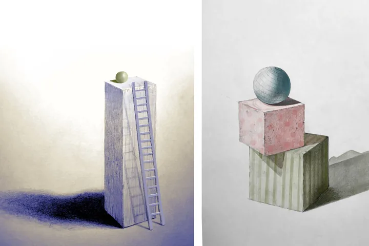
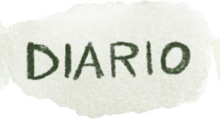
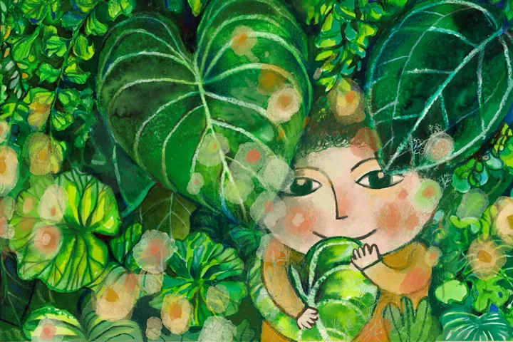
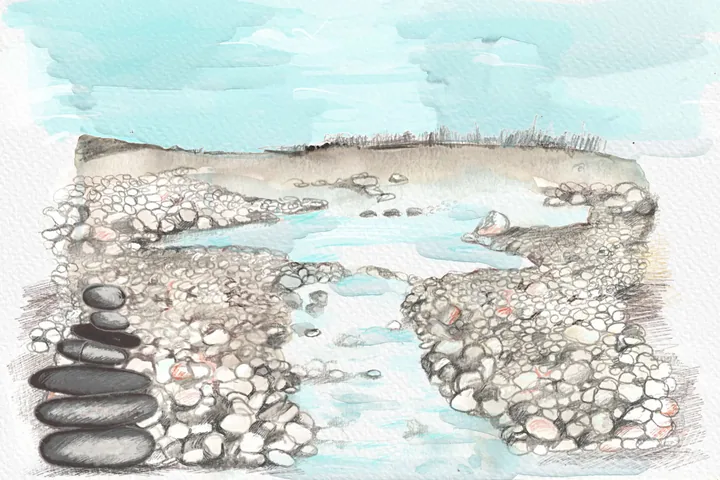
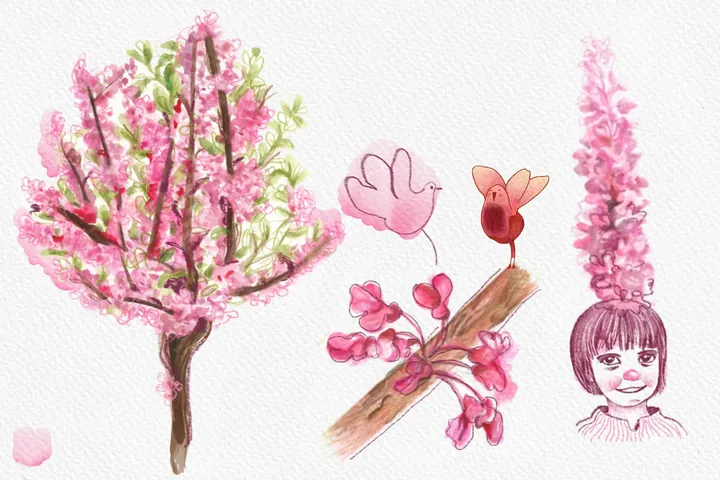
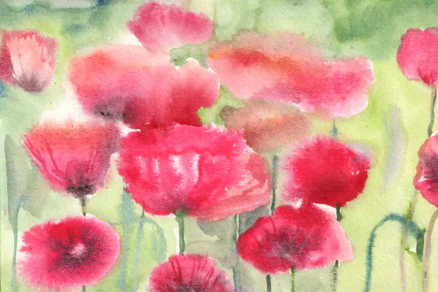
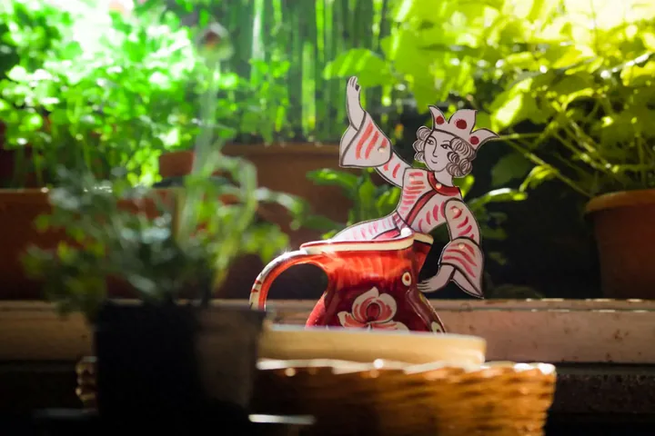
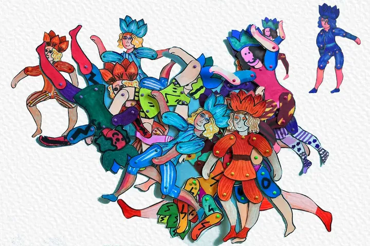
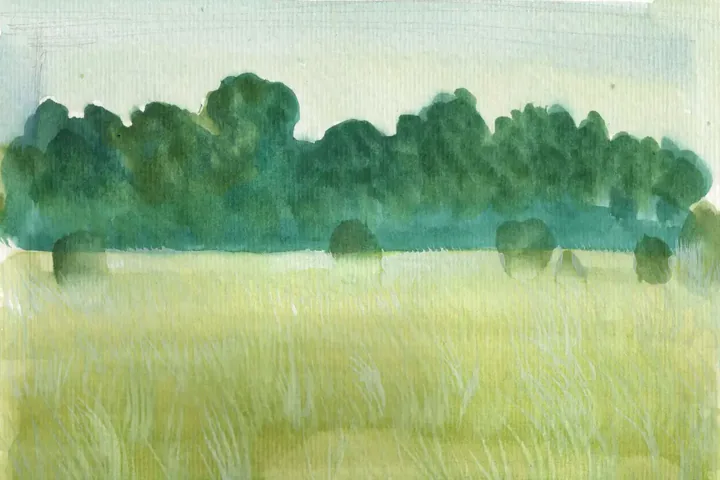

Le ultime pagine

Vegetazione selvaggia
La pittura espressiva di masse verdi e boschi attraverso un segno istintivo. Leggi la pagina
Prugno selvatico
Per questa nuova tappa del mio viaggio di disegno naturalistico, oggi scelgo il bianco delicato del prugno selvatico. Leggi la pagina
Il respiro del Tagliamento
Le rive del Tagliamento, nella zona di Gradisca di Spilimbergo, regalano sempre un ampio respiro. Leggi la pagina
L’Albero di Giuda
Studio e disegno naturalistico dell’Albero di Giuda per la creazione di mondi illustrati. Leggi la pagina
Rosso papavero
Per questa nuova tappa nel mio taccuino di disegno naturalistico, oggi scelgo il rosso papavero. Leggi la pagina
Caraffa
Tutto è partito da una caraffa, una di quelle ceramiche tipiche di Deruta, su cui è dipinto un piccolo omino medievale. Leggi la pagina
Dal segno al movimento
Laboratori creativi per bambini: come dare vita a un personaggio attraverso la tecnica dello stop motion. Leggi la pagina